import pandas as pd
from sklearn.preprocessing import MinMaxScaler
from scipy import stats
import statsmodels.api as sm
from statsmodels.formula.api import ols3. Which crops grow the best in each soil type?
# Download the file first
!wget https://raw.githubusercontent.com/jinshijian/SoilHealthDB/master/data/SoilHealthDB_V2.csv
# Read the downloaded CSV file
df = pd.read_csv('SoilHealthDB_V2.csv', encoding='latin-1')
# Display the first few rows to verify
print(df.head())--2025-07-11 17:44:54-- https://raw.githubusercontent.com/jinshijian/SoilHealthDB/master/data/SoilHealthDB_V2.csv
Resolving raw.githubusercontent.com (raw.githubusercontent.com)... 185.199.110.133, 185.199.108.133, 185.199.111.133, ...
Connecting to raw.githubusercontent.com (raw.githubusercontent.com)|185.199.110.133|:443... connected.
HTTP request sent, awaiting response... 200 OK
Length: 3545298 (3.4M) [application/octet-stream]
Saving to: ‘SoilHealthDB_V2.csv’
SoilHealthDB_V2.csv 100%[===================>] 3.38M 9.38MB/s in 0.4s
2025-07-11 17:44:56 (9.38 MB/s) - ‘SoilHealthDB_V2.csv’ saved [3545298/3545298]
StudyID ExperimentID Author_F Author_G YearPublication SamplingYear \
0 1 1-Jan Abawi G.S. 2000 NaN
1 1 1-Jan Abawi G.S. 2000 NaN
2 1 2-Jan Abawi G.S. 2000 NaN
3 1 1-Jan Abawi G.S. 2000 NaN
4 1 4-Jan Abawi G.S. 2000 NaN
Journal SiteInfor Country Latitude ... MBN_C_SD MBN_T_SD \
0 Applied Soil Ecology New York USA 40.71 ... NaN NaN
1 Applied Soil Ecology New York USA 40.71 ... NaN NaN
2 Applied Soil Ecology New York USA 40.71 ... NaN NaN
3 Applied Soil Ecology New York USA 40.71 ... NaN NaN
4 Applied Soil Ecology New York USA 40.71 ... NaN NaN
38.MBN_Comments Microelement SQI ESS Texture_C Comments1 \
0 NaN NaN NaN NaN NaN Root infected by rot
1 NaN NaN NaN NaN NaN Root infected by rot
2 NaN NaN NaN NaN NaN Root infected by rot
3 NaN NaN NaN NaN NaN Root infected by rot
4 NaN NaN NaN NaN NaN Root infected by rot
Comments2 Comments3
0 NaN NaN
1 NaN NaN
2 NaN NaN
3 NaN NaN
4 NaN NaN
[5 rows x 270 columns]/tmp/ipython-input-2-2313439922.py:5: DtypeWarning: Columns (16,19,20,24,25,52,77,122,150,152,160,192,197,212,232,237,242,247,252,262,265,266) have mixed types. Specify dtype option on import or set low_memory=False.
df = pd.read_csv('SoilHealthDB_V2.csv', encoding='latin-1')Create a df of the soil types column, the crop column, and the covercrop column, and crop yield if it exists. Remember the db has two on each row. Conventional and covercrop/organic. Fields to use: - SoilFamily (soil type is missing a lot of data) - GrainCropGroup (as there are so many mixed records where it is unclear if they are grown in rotation or both grown regularly) - CoverCropGroup (as is more important that a cover crop is used, and is difficult to normalise when multiple covercrops are used) - Yield_C, Yield_T: though the units are not always the same. kg/hm2 unless comments say otherwise, so need comments and remove records where not kg/hm2 (or convert, but there aren’t many records of this)
# Create the new dataframe with the specified columns
df_subset = df[[
'SoilFamily',
'GrainCropGroup',
'CoverCropGroup',
'Yield_C',
'Yield_T'
]]
# Display the first few rows of the new dataframe
print(df_subset.head())
# Display info about the new dataframe to check for missing values and data types
print(df_subset.info()) SoilFamily GrainCropGroup CoverCropGroup Yield_C Yield_T
0 NaN MTT Legume NaN NaN
1 NaN MTT Legume NaN NaN
2 NaN MTT Brassica 4862.0 3990.0
3 NaN MTT Legume NaN NaN
4 NaN MTT Rye NaN NaN
<class 'pandas.core.frame.DataFrame'>
RangeIndex: 5907 entries, 0 to 5906
Data columns (total 5 columns):
# Column Non-Null Count Dtype
--- ------ -------------- -----
0 SoilFamily 4258 non-null object
1 GrainCropGroup 5616 non-null object
2 CoverCropGroup 5062 non-null object
3 Yield_C 2382 non-null float64
4 Yield_T 2381 non-null float64
dtypes: float64(2), object(3)
memory usage: 230.9+ KB
NoneAs the questions are about soil type and crop, these fields cannot be null
# Remove rows where SoilFamily or GrainCrop is missing
df_subset = df_subset.dropna(subset=['SoilFamily', 'GrainCropGroup', 'Yield_C', 'Yield_T'])
# Display info about the cleaned dataframe to check for missing values
print(df_subset.info())<class 'pandas.core.frame.DataFrame'>
Index: 1713 entries, 13 to 5906
Data columns (total 5 columns):
# Column Non-Null Count Dtype
--- ------ -------------- -----
0 SoilFamily 1713 non-null object
1 GrainCropGroup 1713 non-null object
2 CoverCropGroup 1652 non-null object
3 Yield_C 1713 non-null float64
4 Yield_T 1713 non-null float64
dtypes: float64(2), object(3)
memory usage: 80.3+ KB
None# Separate the dataframe into two based on yield type
df_T = df_subset.copy()
df_C = df_subset.copy()
# Rename columns to have '_T' and '_C' suffixes
df_T = df_T.rename(columns={'Yield_T': 'Yield'})
df_C = df_C.rename(columns={'Yield_C': 'Yield'})
# Add a new column 'Treatment' to identify the source
df_T['Treatment'] = '_T'
df_C['Treatment'] = '_C'
# Set 'CoverCropGroup' to 'None' for '_C' records
df_C['CoverCropGroup'] = 'None'
# Drop the original yield columns that are no longer needed
df_T = df_T.drop(columns=['Yield_C'])
df_C = df_C.drop(columns=['Yield_T'])
# Concatenate the two dataframes back together
df_subset = pd.concat([df_T, df_C], ignore_index=True)
# Display the first few rows of the combined dataframe
print(df_subset.head())
# Display info about the combined dataframe
print(df_subset.info()) SoilFamily GrainCropGroup CoverCropGroup Yield Treatment
0 Haplustoll Vegetable Rye 23300.0 _T
1 Haplustoll Vegetable Grass 19800.0 _T
2 Haplustoll Vegetable Grass 19600.0 _T
3 Haplustoll Vegetable Rye 21400.0 _T
4 Haplustoll Vegetable Grass 18000.0 _T
<class 'pandas.core.frame.DataFrame'>
RangeIndex: 3426 entries, 0 to 3425
Data columns (total 5 columns):
# Column Non-Null Count Dtype
--- ------ -------------- -----
0 SoilFamily 3426 non-null object
1 GrainCropGroup 3426 non-null object
2 CoverCropGroup 3365 non-null object
3 Yield 3426 non-null float64
4 Treatment 3426 non-null object
dtypes: float64(1), object(4)
memory usage: 134.0+ KB
Noneclean the grain crop groups
print(df_subset['GrainCropGroup'].unique())['Vegetable' 'Wheat-oat' 'Soybean' 'Sorghum' 'Wheat' 'Corn' 'Corn-oat'
'Corn-soybean-wheat' 'Corn-soybean' 'Arable' 'Corn-wheat-millet'
'Corn-wheat' 'Maize' 'Orchard' 'Unknown' 'Pasture']# df_combined['GrainCropGroup'] = df_combined['GrainCropGroup'].replace(['Corn', 'Soybean', 'Wheat','Arable'], 'Monoculture')
df_subset['GrainCropGroup'] = df_subset['GrainCropGroup'].replace(['CS','CSO'], 'Corn-soybean')
df_subset['GrainCropGroup'] = df_subset['GrainCropGroup'].replace('CW', 'Corn-wheat')
df_subset['GrainCropGroup'] = df_subset['GrainCropGroup'].replace( 'CO', 'Corn-oat')
df_subset['GrainCropGroup'] = df_subset['GrainCropGroup'].replace('WO', 'Wheat-oat')
df_subset['GrainCropGroup'] = df_subset['GrainCropGroup'].replace('CWO', 'Corn-wheat-millet')
df_subset['GrainCropGroup'] = df_subset['GrainCropGroup'].replace('CSW', 'Corn-soybean-wheat')
df_subset['GrainCropGroup'] = df_subset['GrainCropGroup'].replace(['AVG','Other'], 'Unknown')
df_subset['GrainCropGroup'] = df_subset['GrainCropGroup'].replace(['CV','CVO', 'WV'], 'Vegetable')
df_subset = df_subset[df_subset['GrainCropGroup'] != 'MTT']
print(df_subset['GrainCropGroup'].unique())['Vegetable' 'Soybean' 'Corn' 'Corn-oat' 'Sorghum' 'Corn-soybean'
'Corn-soybean-wheat' 'Arable' 'Wheat' 'Wheat-oat' 'Corn-wheat' 'Maize'
'Orchard' 'Unknown' 'Pasture']Normalise and scale data
# Initialize the MinMaxScaler
scaler = MinMaxScaler()
# Apply the scaler to the 'Yield' column
df_subset['Yield_scaled'] = scaler.fit_transform(df_subset[['Yield']])
# Display the first few rows with the new scaled column
print(df_subset.head())
# Display info to check the new column
print(df_subset.info()) SoilFamily GrainCropGroup CoverCropGroup Yield Treatment Yield_scaled
0 Haplustoll Vegetable Rye 23300.0 _T 0.250537
1 Haplustoll Vegetable Grass 19800.0 _T 0.212903
2 Haplustoll Vegetable Grass 19600.0 _T 0.210752
3 Haplustoll Vegetable Rye 21400.0 _T 0.230107
4 Haplustoll Vegetable Grass 18000.0 _T 0.193548
<class 'pandas.core.frame.DataFrame'>
Index: 3404 entries, 0 to 3425
Data columns (total 6 columns):
# Column Non-Null Count Dtype
--- ------ -------------- -----
0 SoilFamily 3404 non-null object
1 GrainCropGroup 3404 non-null object
2 CoverCropGroup 3343 non-null object
3 Yield 3404 non-null float64
4 Treatment 3404 non-null object
5 Yield_scaled 3404 non-null float64
dtypes: float64(2), object(4)
memory usage: 186.2+ KB
NoneThere are a lot of soil types, so to simplify, the eight soil types with the most data will be visualised. It would be good to group the soil and ananlyse it, but a greater knowledge of soil types is needed.
yield_summary = df_subset.groupby("GrainCropGroup")["Yield"].describe()
display(yield_summary)| count | mean | std | min | 25% | 50% | 75% | max | |
|---|---|---|---|---|---|---|---|---|
| GrainCropGroup | ||||||||
| Arable | 306.0 | 2509.983660 | 2269.252545 | 231.000 | 970.75000 | 2151.5000 | 2994.25000 | 13300.000 |
| Corn | 1836.0 | 2994.914352 | 2752.843685 | 1.910 | 1300.00000 | 2257.0000 | 3666.25000 | 19610.000 |
| Corn-oat | 82.0 | 7220.219512 | 2391.680560 | 1260.000 | 6701.00000 | 7471.0000 | 8826.00000 | 10843.000 |
| Corn-soybean | 44.0 | 6702.272727 | 4099.148445 | 1700.000 | 2700.00000 | 5400.0000 | 9925.00000 | 13300.000 |
| Corn-soybean-wheat | 6.0 | 9305.555667 | 167.590156 | 9066.667 | 9186.11075 | 9355.5555 | 9433.33375 | 9466.667 |
| Corn-wheat | 2.0 | 13300.000000 | 212.132034 | 13150.000 | 13225.00000 | 13300.0000 | 13375.00000 | 13450.000 |
| Maize | 38.0 | 2410.157895 | 2368.133151 | 152.000 | 455.00000 | 1605.0000 | 3776.50000 | 7642.000 |
| Orchard | 42.0 | 21847.630714 | 17405.807204 | 0.080 | 13093.75000 | 18950.0000 | 23925.00000 | 72000.000 |
| Pasture | 4.0 | 4425.595000 | 3274.644370 | 852.380 | 2215.59500 | 4365.0000 | 6575.00000 | 8120.000 |
| Sorghum | 72.0 | 3806.111111 | 1170.539247 | 1980.000 | 2870.00000 | 3515.0000 | 4730.00000 | 7140.000 |
| Soybean | 158.0 | 2738.524241 | 2122.808791 | 810.000 | 1882.50000 | 2260.0000 | 3257.50000 | 12300.000 |
| Unknown | 94.0 | 5566.454894 | 3778.772151 | 89.970 | 2675.00000 | 5350.0000 | 7710.00000 | 14030.000 |
| Vegetable | 512.0 | 15054.136719 | 20615.560454 | 3.000 | 1440.00000 | 6300.0000 | 19225.00000 | 93000.000 |
| Wheat | 198.0 | 3295.323232 | 2614.508288 | 407.000 | 2290.75000 | 2701.5000 | 3480.00000 | 15700.000 |
| Wheat-oat | 10.0 | 3828.000000 | 1207.530078 | 1510.000 | 3952.50000 | 4305.0000 | 4467.50000 | 4830.000 |
# Identify rows with non-null 'Yield'
df_subset_with_yield = df_subset.dropna(subset=['Yield'])
top8_soil = df_subset_with_yield['SoilFamily'].value_counts().nlargest(8).index.tolist()
# Create a new dataframe containing only records from the top 8 soil families
df_top8_soil = df_subset_with_yield[df_subset_with_yield['SoilFamily'].isin(top8_soil)].copy()
# Display info about the new dataframe
print(df_top8_soil.info())
print(df_top8_soil['SoilFamily'].unique())<class 'pandas.core.frame.DataFrame'>
Index: 1270 entries, 0 to 3207
Data columns (total 6 columns):
# Column Non-Null Count Dtype
--- ------ -------------- -----
0 SoilFamily 1270 non-null object
1 GrainCropGroup 1270 non-null object
2 CoverCropGroup 1270 non-null object
3 Yield 1270 non-null float64
4 Treatment 1270 non-null object
5 Yield_scaled 1270 non-null float64
dtypes: float64(2), object(4)
memory usage: 69.5+ KB
None
['Haplustoll' 'Typic Hapludulfs'
'Clayey, skeletal, kaolinitic, isohyperthermic oxic paleustalf'
'Oxic Hapleustalf' 'Ferric Luvisol (FAO)' 'Orthic Ferralsols (FAO)'
'Ferric luviso!s' 'AlÞsols']These eight soil types encompass more than a fifth of the records.
import seaborn as sns
import matplotlib.pyplot as plt
# Create a pivot table to count the occurrences of each GrainCropGroup within each SoilFamily
soil_crop_counts = df_top8_soil.pivot_table(index='SoilFamily', columns='GrainCropGroup', aggfunc='size', fill_value=0)
# Plot the heatmap
plt.figure(figsize=(12, 8))
sns.heatmap(soil_crop_counts, annot=True, fmt='d', cmap='viridis')
plt.title('Relationship between SoilFamily and GrainCropGroup (Top 8 Soil Families)')
plt.xlabel('Grain Crop Group')
plt.ylabel('Soil Family')
plt.xticks(rotation=45, ha='right')
plt.yticks(rotation=0)
plt.tight_layout()
plt.show()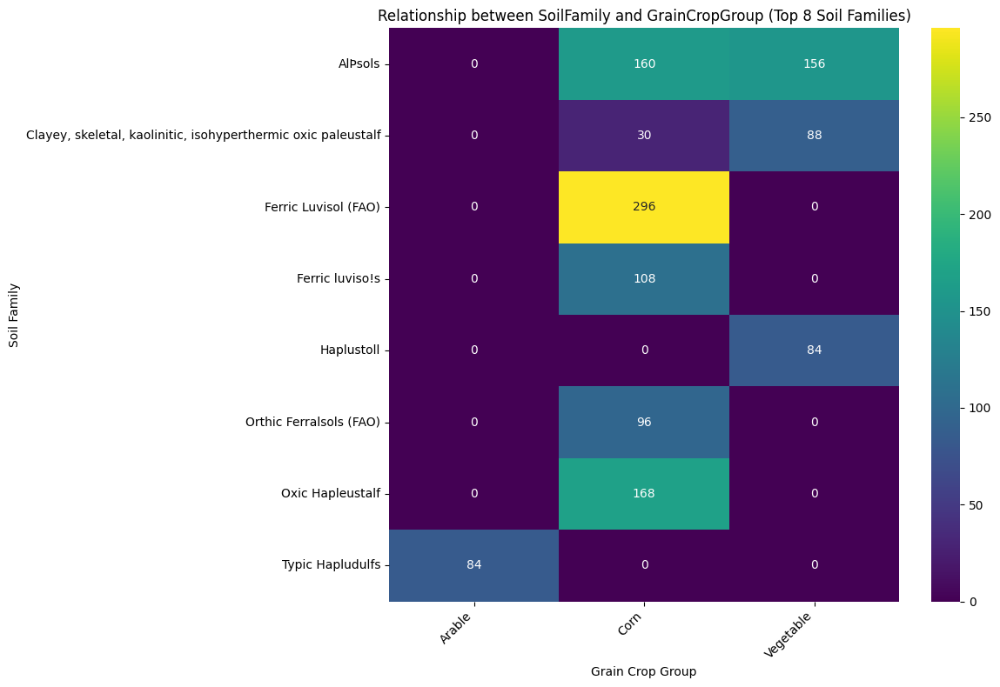
The ‘best’ in this question has been decided as the highest yield, therefore a new df with no null yield values must be created, and then the highest yielding crop for each of the top 8 soil types will be chosen. Some only have one crop group, so this will also be the highest yielding.
print(df_top8_soil['SoilFamily'].unique())['Haplustoll' 'Typic Hapludulfs'
'Clayey, skeletal, kaolinitic, isohyperthermic oxic paleustalf'
'Oxic Hapleustalf' 'Ferric Luvisol (FAO)' 'Orthic Ferralsols (FAO)'
'Ferric luviso!s' 'AlÞsols']# Aggregate the yield data for each SoilFamily and GrainCropGroup combination
soil_crop_yield = df_top8_soil.groupby(['SoilFamily', 'GrainCropGroup'])['Yield'].mean().reset_index()
# Create a bar plot
plt.figure(figsize=(14, 8))
sns.barplot(data=soil_crop_yield, x='SoilFamily', y='Yield', hue='GrainCropGroup', palette='viridis')
plt.title('Average Yield per Soil Family and Grain Crop Group')
plt.xlabel('Soil Family')
plt.ylabel('Average Yield (kg/hm2)')
plt.xticks(rotation=45, ha='right')
plt.legend(title='Grain Crop Group', bbox_to_anchor=(1.05, 1), loc='upper left')
plt.tight_layout()
plt.show()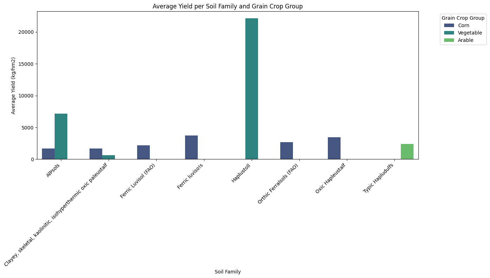
There are several issues here, most soil types don’t have more than one crop type, which means we can’t determine the best, as there is nothing to compare them to. Secondly Haplustoll has a much higher yield than most, which could be from bad data (it could be recorded in other units), or could be using a high intensity technique, such as vertical farming or greenhouses, which doesn’t necessarily mean Haplustoll soil is this good for growing vegetables in.
It is better to use soil types which have data on three or more Grain crop groups, to be able to compare them.
# Identify SoilFamily with at least two unique GrainCropGroup entries that have non-null 'Yield' data
soil_family_with_multiple_crops = df_subset_with_yield.groupby('SoilFamily')['GrainCropGroup'].nunique()
# Filter for SoilFamily where the number of unique GrainCropGroup is 2 or more
soil_families_with_multiple_yield_crops = soil_family_with_multiple_crops[soil_family_with_multiple_crops >= 3].index.tolist()
print("Soil Families with Yield data for at least two Grain Crop Groups:")
print(soil_families_with_multiple_yield_crops)
# Create a subset of the original dataframe containing only these SoilFamilies
df_soil_multiple_crops = df_subset_with_yield[df_subset_with_yield['SoilFamily'].isin(soil_families_with_multiple_yield_crops)].copy()
print("\nDataFrame subset for Soil Families with multiple crops:")
print(df_soil_multiple_crops.head())
print(df_soil_multiple_crops.info())Soil Families with Yield data for at least two Grain Crop Groups:
['Canfield silt loam (fine-loamy, mixed mesic Aquic Fragiudalf)', 'Dystric cambisol on granite bedrock', 'Haplic Luvisols', 'Haplic luvisol on calcareous bedrock', 'Mesic Vertic Epiaqualf', 'Typic Hapludult']
DataFrame subset for Soil Families with multiple crops:
SoilFamily GrainCropGroup \
440 Canfield silt loam (fine-loamy, mixed mesic Aq... Corn
441 Canfield silt loam (fine-loamy, mixed mesic Aq... Corn
442 Canfield silt loam (fine-loamy, mixed mesic Aq... Corn
443 Canfield silt loam (fine-loamy, mixed mesic Aq... Corn
444 Canfield silt loam (fine-loamy, mixed mesic Aq... Soybean
CoverCropGroup Yield Treatment Yield_scaled
440 Rye 11100.0 _T 0.119354
441 Rye 6700.0 _T 0.072042
442 Rye 10100.0 _T 0.108601
443 Rye 8900.0 _T 0.095698
444 Rye 12100.0 _T 0.130107
<class 'pandas.core.frame.DataFrame'>
Index: 214 entries, 440 to 3390
Data columns (total 6 columns):
# Column Non-Null Count Dtype
--- ------ -------------- -----
0 SoilFamily 214 non-null object
1 GrainCropGroup 214 non-null object
2 CoverCropGroup 180 non-null object
3 Yield 214 non-null float64
4 Treatment 214 non-null object
5 Yield_scaled 214 non-null float64
dtypes: float64(2), object(4)
memory usage: 11.7+ KB
Nonedf_soil_multiple_crops['SoilFamily'] = df_soil_multiple_crops['SoilFamily'].replace('Canfield silt loam (fine-loamy, mixed mesic Aquic Fragiudalf)', 'Mesic Aquic Fragiudalf')
print(df_soil_multiple_crops['SoilFamily'].unique())['Mesic Aquic Fragiudalf' 'Dystric cambisol on granite bedrock'
'Haplic luvisol on calcareous bedrock' 'Mesic Vertic Epiaqualf'
'Haplic Luvisols' 'Typic Hapludult']create bar plot of crops for each soil type
average_yield = df_soil_multiple_crops.groupby(['SoilFamily', 'GrainCropGroup'])['Yield'].mean().reset_index()
# Sort the dataframe by SoilFamily to ensure consistent plotting order
average_yield_sorted = average_yield.sort_values('SoilFamily')
# Create the bar plot
plt.figure(figsize=(16, 9)) # Adjusted figure size for better readability
sns.barplot(data=average_yield_sorted, x='SoilFamily', y='Yield', hue='GrainCropGroup', palette='tab20')
# Set title and labels
plt.title('Average Yield per Soil Family and Grain Crop Group (Soil Families with Multiple Crops)')
plt.xlabel('Soil Family')
plt.ylabel('Average Yield (kg/hm2)')
# Rotate x-axis labels for better readability
plt.xticks(rotation=45, ha='right')
# Add vertical lines to separate soil types
# Get the unique soil families and their positions on the x-axis
unique_soils = average_yield_sorted['SoilFamily'].unique()
# Add lines after each soil type except the last one
for i in range(len(unique_soils) - 1):
plt.axvline(x=i + 0.5, color='black', linestyle='--', linewidth=1)
# Add a legend
plt.legend(title='Grain Crop Group', bbox_to_anchor=(1.05, 1), loc='upper left')
# Adjust layout to prevent labels from overlapping
plt.tight_layout()
# Show the plot
plt.show()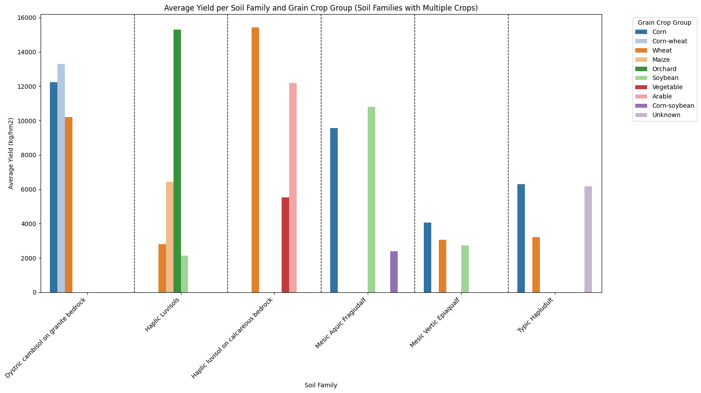
# Find the top GrainCropGroup for each SoilFamily in df_soil_multiple_crops
top_crops_per_soil = df_soil_multiple_crops.loc[df_soil_multiple_crops.groupby('SoilFamily')['Yield'].idxmax()]
print("\nTop GrainCropGroup for each SoilFamily:")
print(top_crops_per_soil[['SoilFamily', 'GrainCropGroup', 'Yield']])
Top GrainCropGroup for each SoilFamily:
SoilFamily GrainCropGroup Yield
509 Dystric cambisol on granite bedrock Corn-wheat 13450.0
1561 Haplic Luvisols Orchard 17250.0
2226 Haplic luvisol on calcareous bedrock Wheat 15700.0
2157 Mesic Aquic Fragiudalf Soybean 12300.0
3251 Mesic Vertic Epiaqualf Corn 6920.0
1653 Typic Hapludult Corn 12180.0Check if top crop group is significantly different to other crop groups in soil family
# Group data by SoilFamily and GrainCropGroup
grouped_yield = df_soil_multiple_crops.groupby(['SoilFamily', 'GrainCropGroup'])['Yield']
# Iterate through each SoilFamily with multiple crops
for soil_family in df_soil_multiple_crops['SoilFamily'].unique():
print(f"\nAnalyzing SoilFamily: {soil_family}")
# Get the data for the current SoilFamily
df_soil = df_soil_multiple_crops[df_soil_multiple_crops['SoilFamily'] == soil_family].copy()
# Get the top crop for this soil type based on average yield
top_crop = df_soil.groupby('GrainCropGroup')['Yield'].mean().idxmax()
print(f" Top Crop: {top_crop}")
# Get the yields for the top crop
yields_top_crop = df_soil[df_soil['GrainCropGroup'] == top_crop]['Yield']
# Get the yields for all other crops in this soil type
yields_other_crops = df_soil[df_soil['GrainCropGroup'] != top_crop]['Yield']
# Perform independent t-test if both groups have enough data
if len(yields_top_crop) > 1 and len(yields_other_crops) > 1:
# Before performing t-test, check for equal variances using Levene's test
# If p-value from Levene's test is < 0.05, assume unequal variances
try:
levene_statistic, levene_p_value = stats.levene(yields_top_crop, yields_other_crops)
equal_var = levene_p_value >= 0.05
print(f" Levene's Test p-value: {levene_p_value:.4f} (Assuming equal variances: {equal_var})")
# Perform t-test
t_statistic, p_value = stats.ttest_ind(yields_top_crop, yields_other_crops, equal_var=equal_var)
print(f" Independent t-test comparing {top_crop} yield to other crop yields:")
print(f" T-statistic: {t_statistic:.4f}")
print(f" P-value: {p_value:.4f}")
# Interpret the result
alpha = 0.05
if p_value < alpha:
print(f" Result: The yield of {top_crop} is significantly different from the yield of other crops in {soil_family} soil (p < {alpha}).")
else:
print(f" Result: There is no statistically significant difference in yield between {top_crop} and other crops in {soil_family} soil (p >= {alpha}).")
except ValueError as e:
print(f" Could not perform t-test for {soil_family}: {e}")
else:
print(f" Not enough data for statistical testing for {soil_family} (need at least 2 samples in each group).")
Analyzing SoilFamily: Mesic Aquic Fragiudalf
Top Crop: Soybean
Levene's Test p-value: 0.0164 (Assuming equal variances: False)
Independent t-test comparing Soybean yield to other crop yields:
T-statistic: 3.7700
P-value: 0.0011
Result: The yield of Soybean is significantly different from the yield of other crops in Mesic Aquic Fragiudalf soil (p < 0.05).
Analyzing SoilFamily: Dystric cambisol on granite bedrock
Top Crop: Corn-wheat
Levene's Test p-value: 0.0605 (Assuming equal variances: True)
Independent t-test comparing Corn-wheat yield to other crop yields:
T-statistic: 2.2216
P-value: 0.0904
Result: There is no statistically significant difference in yield between Corn-wheat and other crops in Dystric cambisol on granite bedrock soil (p >= 0.05).
Analyzing SoilFamily: Haplic luvisol on calcareous bedrock
Top Crop: Wheat
Levene's Test p-value: 0.0000 (Assuming equal variances: False)
Independent t-test comparing Wheat yield to other crop yields:
T-statistic: 5.1017
P-value: 0.0013
Result: The yield of Wheat is significantly different from the yield of other crops in Haplic luvisol on calcareous bedrock soil (p < 0.05).
Analyzing SoilFamily: Mesic Vertic Epiaqualf
Top Crop: Corn
Levene's Test p-value: 0.0003 (Assuming equal variances: False)
Independent t-test comparing Corn yield to other crop yields:
T-statistic: 3.9077
P-value: 0.0006
Result: The yield of Corn is significantly different from the yield of other crops in Mesic Vertic Epiaqualf soil (p < 0.05).
Analyzing SoilFamily: Haplic Luvisols
Top Crop: Orchard
Levene's Test p-value: 0.9541 (Assuming equal variances: True)
Independent t-test comparing Orchard yield to other crop yields:
T-statistic: 6.5605
P-value: 0.0000
Result: The yield of Orchard is significantly different from the yield of other crops in Haplic Luvisols soil (p < 0.05).
Analyzing SoilFamily: Typic Hapludult
Top Crop: Corn
Levene's Test p-value: 0.0013 (Assuming equal variances: False)
Independent t-test comparing Corn yield to other crop yields:
T-statistic: 3.3036
P-value: 0.0016
Result: The yield of Corn is significantly different from the yield of other crops in Typic Hapludult soil (p < 0.05).4.Does the type of cover crop chosen affect the answer for Q3?
Clean each column - make sure there are not duplicate fields
print(df_soil_multiple_crops['CoverCropGroup'].unique())['Rye' 'Brassica' 'No' 'Mixed']df_soil_multiple_crops['CoverCropGroup'] = df_soil_multiple_crops['CoverCropGroup'].replace(['LL', 'Legume_Tree'], 'Legume')
df_soil_multiple_crops['CoverCropGroup'] = df_soil_multiple_crops['CoverCropGroup'].replace(['LG', 'BG', 'AVG', 'MOT'], 'Mixed')
df_soil_multiple_crops['CoverCropGroup'] = df_soil_multiple_crops['CoverCropGroup'].replace('Not_available', 'Unknown')
df_soil_multiple_crops['CoverCropGroup'] = df_soil_multiple_crops['CoverCropGroup'].replace(['No', 'None'], 'No')
df_soil_multiple_crops['CoverCropGroup'] = df_soil_multiple_crops['CoverCropGroup'].replace('BroadleafTree', 'Broadleaf')
print(df_soil_multiple_crops['CoverCropGroup'].unique())['Rye' 'Brassica' 'No' 'Mixed']/tmp/ipython-input-55-3554729350.py:1: SettingWithCopyWarning:
A value is trying to be set on a copy of a slice from a DataFrame.
Try using .loc[row_indexer,col_indexer] = value instead
See the caveats in the documentation: https://pandas.pydata.org/pandas-docs/stable/user_guide/indexing.html#returning-a-view-versus-a-copy
df_soil_multiple_crops['CoverCropGroup'] = df_soil_multiple_crops['CoverCropGroup'].replace(['LL', 'Legume_Tree'], 'Legume')
/tmp/ipython-input-55-3554729350.py:2: SettingWithCopyWarning:
A value is trying to be set on a copy of a slice from a DataFrame.
Try using .loc[row_indexer,col_indexer] = value instead
See the caveats in the documentation: https://pandas.pydata.org/pandas-docs/stable/user_guide/indexing.html#returning-a-view-versus-a-copy
df_soil_multiple_crops['CoverCropGroup'] = df_soil_multiple_crops['CoverCropGroup'].replace(['LG', 'BG', 'AVG', 'MOT'], 'Mixed')
/tmp/ipython-input-55-3554729350.py:3: SettingWithCopyWarning:
A value is trying to be set on a copy of a slice from a DataFrame.
Try using .loc[row_indexer,col_indexer] = value instead
See the caveats in the documentation: https://pandas.pydata.org/pandas-docs/stable/user_guide/indexing.html#returning-a-view-versus-a-copy
df_soil_multiple_crops['CoverCropGroup'] = df_soil_multiple_crops['CoverCropGroup'].replace('Not_available', 'Unknown')
/tmp/ipython-input-55-3554729350.py:4: SettingWithCopyWarning:
A value is trying to be set on a copy of a slice from a DataFrame.
Try using .loc[row_indexer,col_indexer] = value instead
See the caveats in the documentation: https://pandas.pydata.org/pandas-docs/stable/user_guide/indexing.html#returning-a-view-versus-a-copy
df_soil_multiple_crops['CoverCropGroup'] = df_soil_multiple_crops['CoverCropGroup'].replace(['No', 'None'], 'No')
/tmp/ipython-input-55-3554729350.py:5: SettingWithCopyWarning:
A value is trying to be set on a copy of a slice from a DataFrame.
Try using .loc[row_indexer,col_indexer] = value instead
See the caveats in the documentation: https://pandas.pydata.org/pandas-docs/stable/user_guide/indexing.html#returning-a-view-versus-a-copy
df_soil_multiple_crops['CoverCropGroup'] = df_soil_multiple_crops['CoverCropGroup'].replace('BroadleafTree', 'Broadleaf')df_soil_multiple_crops = df_soil_multiple_crops.dropna()print(f"Number of records in df_soil_multiple_crops: {len(df_soil_multiple_crops)}")Number of records in df_soil_multiple_crops: 180These soil families do not contain legume cover crops, which are found to have the highest influence on soil carbon, though this question does not consider soil carbon directly, legumes are known to fix nitrogen, and so it would be better to have some data on legume cover crops.
Plots of crop yield per soil family and cover crop
# Group the dataframe by SoilFamily and apply the scaler to the 'Yield' column within each group
df_soil_multiple_crops['Scaled_Yield'] = df_soil_multiple_crops.groupby('SoilFamily')['Yield'].transform(lambda x: scaler.fit_transform(x.values.reshape(-1, 1)).flatten())
plt.figure(figsize=(16, 9))
sns.violinplot(data=df_soil_multiple_crops, x='SoilFamily', y='Scaled_Yield', hue='CoverCropGroup', split=True, inner='quart', palette='tab10')
plt.title('Yield Distribution per Soil Family by Cover Crop Group')
plt.xlabel('Soil Family')
plt.ylabel('Scaled Yield')
plt.xticks(rotation=45, ha='right')
plt.legend(title='Cover Crop Group', bbox_to_anchor=(1.05, 1), loc='upper left')
plt.tight_layout()
plt.show()/tmp/ipython-input-26-169645150.py:2: SettingWithCopyWarning:
A value is trying to be set on a copy of a slice from a DataFrame.
Try using .loc[row_indexer,col_indexer] = value instead
See the caveats in the documentation: https://pandas.pydata.org/pandas-docs/stable/user_guide/indexing.html#returning-a-view-versus-a-copy
df_soil_multiple_crops['Scaled_Yield'] = df_soil_multiple_crops.groupby('SoilFamily')['Yield'].transform(lambda x: scaler.fit_transform(x.values.reshape(-1, 1)).flatten())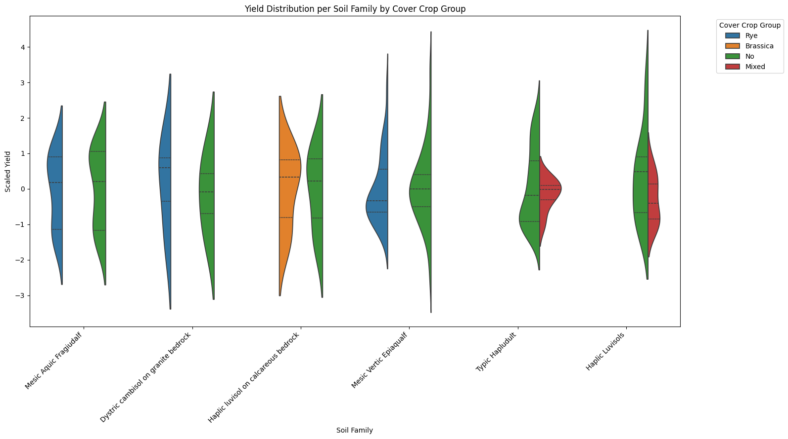
# Iterate through each unique soil family
for soil_family in df_soil_multiple_crops.SoilFamily.unique():
# Filter data for the current soil family
df_soil = df_soil_multiple_crops[df_soil_multiple_crops['SoilFamily'] == soil_family]
# Check if there is data for this soil family
if not df_soil.empty:
plt.figure(figsize=(5, 5))
sns.boxplot(data=df_soil, x='GrainCropGroup', y='Scaled_Yield', hue='CoverCropGroup', palette='viridis')
plt.title(f'{soil_family}')
plt.xlabel('Grain Crop Group')
plt.ylabel('Yield (scaled)')
plt.xticks(rotation=45, ha='right')
plt.legend(title='Cover Crop Group', bbox_to_anchor=(1.05, 1), loc='upper left')
plt.tight_layout()
plt.show()
else:
print(f"No data available for SoilFamily: {soil_family}")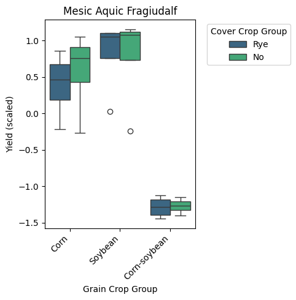
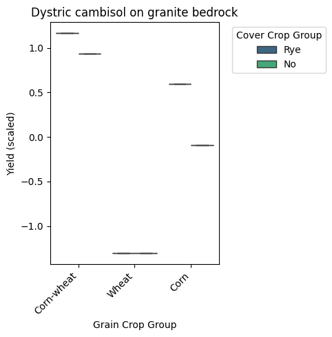
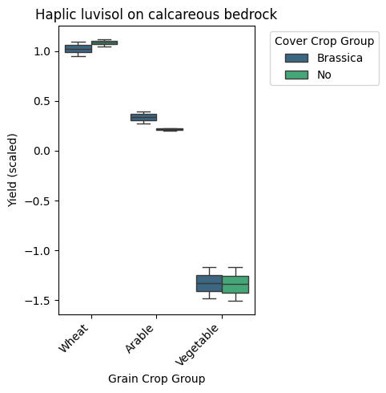
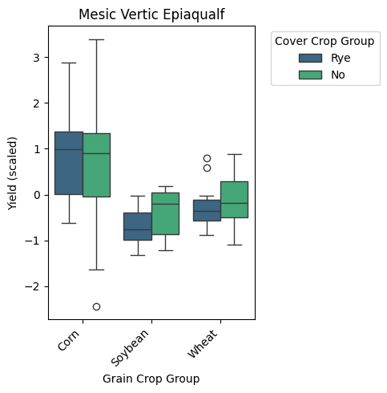
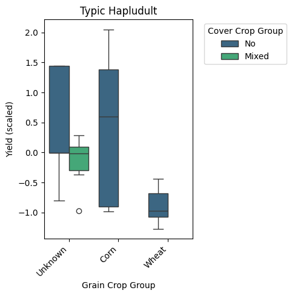
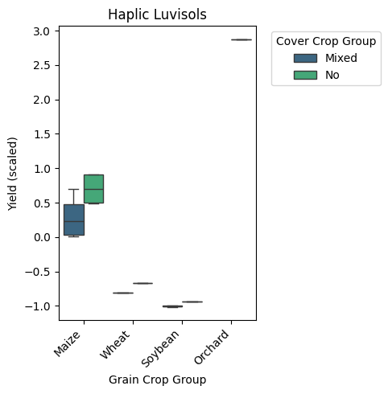
Check significance of yield/grain crop group/cover crop group relationships
# Iterate through each unique SoilFamily
for soil_family in df_soil_multiple_crops['SoilFamily'].unique():
print(f"\nAnalyzing SoilFamily: {soil_family}")
# Filter data for the current soil family
df_soil = df_soil_multiple_crops[df_soil_multiple_crops['SoilFamily'] == soil_family].copy()
# Check if there is data for this soil family
if not df_soil.empty:
# Iterate through each unique GrainCropGroup within this soil family
for grain_crop_group in df_soil['GrainCropGroup'].unique():
print(f" Analyzing GrainCropGroup: {grain_crop_group}")
# Filter data for the current grain crop group within this soil family
df_grain_crop = df_soil[df_soil['GrainCropGroup'] == grain_crop_group].copy()
# Check if there are multiple CoverCropGroups to compare
if df_grain_crop['CoverCropGroup'].nunique() > 1:
# Get the unique cover crop groups
cover_crop_groups = df_grain_crop['CoverCropGroup'].unique()
# Perform pairwise comparisons between cover crop groups using independent t-tests
for i in range(len(cover_crop_groups)):
for j in range(i + 1, len(cover_crop_groups)):
group1 = cover_crop_groups[i]
group2 = cover_crop_groups[j]
yields_group1 = df_grain_crop[df_grain_crop['CoverCropGroup'] == group1]['Scaled_Yield'].dropna()
yields_group2 = df_grain_crop[df_grain_crop['CoverCropGroup'] == group2]['Scaled_Yield'].dropna()
# Ensure both groups have enough data for a t-test (at least 2 samples)
if len(yields_group1) >= 2 and len(yields_group2) >= 2:
try:
# Perform Levene's test for equal variances
levene_stat, levene_p = stats.levene(yields_group1, yields_group2)
equal_var = levene_p >= 0.05 # If p >= 0.05, assume equal variances
# Perform independent t-test
t_stat, p_value = stats.ttest_ind(yields_group1, yields_group2, equal_var=equal_var)
print(f" Comparison between {group1} and {group2}:")
print(f" Levene's Test p-value: {levene_p:.4f} (Assuming equal variances: {equal_var})")
print(f" Independent t-test p-value: {p_value:.4f}")
# Interpret the result
alpha = 0.05
if p_value < alpha:
print(f" Result: Scaled_Yield is significantly different between {group1} and {group2} (p < {alpha}).")
else:
print(f" Result: There is no statistically significant difference in Scaled_Yield between {group1} and {group2} (p >= {alpha}).")
except ValueError as e:
print(f" Could not perform t-test for {group1} vs {group2}: {e}")
else:
print(f" Not enough data to compare {group1} and {group2} (need at least 2 samples in each group).")
elif df_grain_crop['CoverCropGroup'].nunique() == 1:
print(f" Only one CoverCropGroup ('{df_grain_crop['CoverCropGroup'].iloc[0]}') for {grain_crop_group}. Cannot perform comparison.")
else:
print(f" No CoverCropGroup data available for {grain_crop_group}.")
else:
print(f"No data available for SoilFamily: {soil_family}")
Analyzing SoilFamily: Mesic Aquic Fragiudalf
Analyzing GrainCropGroup: Corn
Comparison between Rye and No:
Levene's Test p-value: 0.8904 (Assuming equal variances: True)
Independent t-test p-value: 0.6403
Result: There is no statistically significant difference in Scaled_Yield between Rye and No (p >= 0.05).
Analyzing GrainCropGroup: Soybean
Comparison between Rye and No:
Levene's Test p-value: 0.8729 (Assuming equal variances: True)
Independent t-test p-value: 0.9234
Result: There is no statistically significant difference in Scaled_Yield between Rye and No (p >= 0.05).
Analyzing GrainCropGroup: Corn-soybean
Comparison between Rye and No:
Levene's Test p-value: 0.2413 (Assuming equal variances: True)
Independent t-test p-value: 0.8458
Result: There is no statistically significant difference in Scaled_Yield between Rye and No (p >= 0.05).
Analyzing SoilFamily: Dystric cambisol on granite bedrock
Analyzing GrainCropGroup: Corn-wheat
Not enough data to compare Rye and No (need at least 2 samples in each group).
Analyzing GrainCropGroup: Wheat
Not enough data to compare Rye and No (need at least 2 samples in each group).
Analyzing GrainCropGroup: Corn
Not enough data to compare Rye and No (need at least 2 samples in each group).
Analyzing SoilFamily: Haplic luvisol on calcareous bedrock
Analyzing GrainCropGroup: Wheat
Comparison between Brassica and No:
Levene's Test p-value: 0.0000 (Assuming equal variances: False)
Independent t-test p-value: 0.5568
Result: There is no statistically significant difference in Scaled_Yield between Brassica and No (p >= 0.05).
Analyzing GrainCropGroup: Arable
Comparison between Brassica and No:
Levene's Test p-value: 0.0000 (Assuming equal variances: False)
Independent t-test p-value: 0.2856
Result: There is no statistically significant difference in Scaled_Yield between Brassica and No (p >= 0.05).
Analyzing GrainCropGroup: Vegetable
Comparison between Brassica and No:
Levene's Test p-value: 0.0000 (Assuming equal variances: False)
Independent t-test p-value: 0.9630
Result: There is no statistically significant difference in Scaled_Yield between Brassica and No (p >= 0.05).
Analyzing SoilFamily: Mesic Vertic Epiaqualf
Analyzing GrainCropGroup: Corn
Comparison between Rye and No:
Levene's Test p-value: 0.4802 (Assuming equal variances: True)
Independent t-test p-value: 0.7163
Result: There is no statistically significant difference in Scaled_Yield between Rye and No (p >= 0.05).
Analyzing GrainCropGroup: Soybean
Comparison between Rye and No:
Levene's Test p-value: 0.5998 (Assuming equal variances: True)
Independent t-test p-value: 0.0947
Result: There is no statistically significant difference in Scaled_Yield between Rye and No (p >= 0.05).
Analyzing GrainCropGroup: Wheat
Comparison between Rye and No:
Levene's Test p-value: 0.6539 (Assuming equal variances: True)
Independent t-test p-value: 0.6311
Result: There is no statistically significant difference in Scaled_Yield between Rye and No (p >= 0.05).
Analyzing SoilFamily: Typic Hapludult
Analyzing GrainCropGroup: Unknown
Comparison between No and Mixed:
Levene's Test p-value: 0.2676 (Assuming equal variances: True)
Independent t-test p-value: 0.1163
Result: There is no statistically significant difference in Scaled_Yield between No and Mixed (p >= 0.05).
Analyzing GrainCropGroup: Corn
Only one CoverCropGroup ('No') for Corn. Cannot perform comparison.
Analyzing GrainCropGroup: Wheat
Only one CoverCropGroup ('No') for Wheat. Cannot perform comparison.
Analyzing SoilFamily: Haplic Luvisols
Analyzing GrainCropGroup: Maize
Comparison between Mixed and No:
Levene's Test p-value: 0.4566 (Assuming equal variances: True)
Independent t-test p-value: 0.0884
Result: There is no statistically significant difference in Scaled_Yield between Mixed and No (p >= 0.05).
Analyzing GrainCropGroup: Wheat
Comparison between Mixed and No:
Levene's Test p-value: 0.0000 (Assuming equal variances: False)
Independent t-test p-value: 0.0028
Result: Scaled_Yield is significantly different between Mixed and No (p < 0.05).
Analyzing GrainCropGroup: Soybean
Comparison between Mixed and No:
Levene's Test p-value: 0.0000 (Assuming equal variances: False)
Independent t-test p-value: 0.0885
Result: There is no statistically significant difference in Scaled_Yield between Mixed and No (p >= 0.05).
Analyzing GrainCropGroup: Orchard
Only one CoverCropGroup ('No') for Orchard. Cannot perform comparison./usr/local/lib/python3.11/dist-packages/scipy/stats/_morestats.py:3057: RuntimeWarning: divide by zero encountered in scalar divide
W = numer / denom# Apply Shapiro-Wilk test to check for normality of Scaled_Yield
# Iterate through each unique SoilFamily and GrainCropGroup combination with sufficient data
for soil_family in df_soil_multiple_crops['SoilFamily'].unique():
for grain_crop_group in df_soil_multiple_crops[df_soil_multiple_crops['SoilFamily'] == soil_family]['GrainCropGroup'].unique():
# Filter data for the current combination
df_combination = df_soil_multiple_crops[(df_soil_multiple_crops['SoilFamily'] == soil_family) & (df_soil_multiple_crops['GrainCropGroup'] == grain_crop_group)].copy()
# Check if there's enough data (at least 3 samples are generally recommended for Shapiro-Wilk)
if len(df_combination) >= 3:
# Get the Scaled_Yield data
scaled_yield_data = df_combination['Scaled_Yield'].dropna()
if len(scaled_yield_data) >= 3:
# Perform Shapiro-Wilk test
try:
shapiro_statistic, shapiro_p_value = stats.shapiro(scaled_yield_data)
print(f"\nShapiro-Wilk Test for SoilFamily: {soil_family}, GrainCropGroup: {grain_crop_group}")
print(f" Shapiro-Wilk Statistic: {shapiro_statistic:.4f}")
print(f" P-value: {shapiro_p_value:.4f}")
# Interpret the result
alpha = 0.05
if shapiro_p_value < alpha:
print(f" Result: The Scaled_Yield distribution for this combination is likely not normal (p < {alpha}).")
else:
print(f" Result: The Scaled_Yield distribution for this combination is likely normal (p >= {alpha}).")
except Exception as e:
print(f" Could not perform Shapiro-Wilk test for SoilFamily: {soil_family}, GrainCropGroup: {grain_crop_group}: {e}")
else:
print(f"\nNot enough non-null data (need at least 3) for Shapiro-Wilk Test for SoilFamily: {soil_family}, GrainCropGroup: {grain_crop_group}")
else:
print(f"\nNot enough data (need at least 3 samples) for Shapiro-Wilk Test for SoilFamily: {soil_family}, GrainCropGroup: {grain_crop_group}")
Shapiro-Wilk Test for SoilFamily: Mesic Aquic Fragiudalf, GrainCropGroup: Corn
Shapiro-Wilk Statistic: 0.8803
P-value: 0.1895
Result: The Scaled_Yield distribution for this combination is likely normal (p >= 0.05).
Shapiro-Wilk Test for SoilFamily: Mesic Aquic Fragiudalf, GrainCropGroup: Soybean
Shapiro-Wilk Statistic: 0.6621
P-value: 0.0008
Result: The Scaled_Yield distribution for this combination is likely not normal (p < 0.05).
Shapiro-Wilk Test for SoilFamily: Mesic Aquic Fragiudalf, GrainCropGroup: Corn-soybean
Shapiro-Wilk Statistic: 0.9362
P-value: 0.5742
Result: The Scaled_Yield distribution for this combination is likely normal (p >= 0.05).
Not enough data (need at least 3 samples) for Shapiro-Wilk Test for SoilFamily: Dystric cambisol on granite bedrock, GrainCropGroup: Corn-wheat
Not enough data (need at least 3 samples) for Shapiro-Wilk Test for SoilFamily: Dystric cambisol on granite bedrock, GrainCropGroup: Wheat
Not enough data (need at least 3 samples) for Shapiro-Wilk Test for SoilFamily: Dystric cambisol on granite bedrock, GrainCropGroup: Corn
Shapiro-Wilk Test for SoilFamily: Haplic luvisol on calcareous bedrock, GrainCropGroup: Wheat
Shapiro-Wilk Statistic: 0.9202
P-value: 0.5381
Result: The Scaled_Yield distribution for this combination is likely normal (p >= 0.05).
Shapiro-Wilk Test for SoilFamily: Haplic luvisol on calcareous bedrock, GrainCropGroup: Arable
Shapiro-Wilk Statistic: 0.8947
P-value: 0.4051
Result: The Scaled_Yield distribution for this combination is likely normal (p >= 0.05).
Shapiro-Wilk Test for SoilFamily: Haplic luvisol on calcareous bedrock, GrainCropGroup: Vegetable
Shapiro-Wilk Statistic: 0.7599
P-value: 0.0476
Result: The Scaled_Yield distribution for this combination is likely not normal (p < 0.05).
Shapiro-Wilk Test for SoilFamily: Mesic Vertic Epiaqualf, GrainCropGroup: Corn
Shapiro-Wilk Statistic: 0.9771
P-value: 0.8375
Result: The Scaled_Yield distribution for this combination is likely normal (p >= 0.05).
Shapiro-Wilk Test for SoilFamily: Mesic Vertic Epiaqualf, GrainCropGroup: Soybean
Shapiro-Wilk Statistic: 0.9223
P-value: 0.0657
Result: The Scaled_Yield distribution for this combination is likely normal (p >= 0.05).
Shapiro-Wilk Test for SoilFamily: Mesic Vertic Epiaqualf, GrainCropGroup: Wheat
Shapiro-Wilk Statistic: 0.9625
P-value: 0.4899
Result: The Scaled_Yield distribution for this combination is likely normal (p >= 0.05).
Shapiro-Wilk Test for SoilFamily: Typic Hapludult, GrainCropGroup: Unknown
Shapiro-Wilk Statistic: 0.8458
P-value: 0.0118
Result: The Scaled_Yield distribution for this combination is likely not normal (p < 0.05).
Shapiro-Wilk Test for SoilFamily: Typic Hapludult, GrainCropGroup: Corn
Shapiro-Wilk Statistic: 0.8715
P-value: 0.0153
Result: The Scaled_Yield distribution for this combination is likely not normal (p < 0.05).
Shapiro-Wilk Test for SoilFamily: Typic Hapludult, GrainCropGroup: Wheat
Shapiro-Wilk Statistic: 0.9374
P-value: 0.3858
Result: The Scaled_Yield distribution for this combination is likely normal (p >= 0.05).
Shapiro-Wilk Test for SoilFamily: Haplic Luvisols, GrainCropGroup: Maize
Shapiro-Wilk Statistic: 0.9133
P-value: 0.3776
Result: The Scaled_Yield distribution for this combination is likely normal (p >= 0.05).
Shapiro-Wilk Test for SoilFamily: Haplic Luvisols, GrainCropGroup: Wheat
Shapiro-Wilk Statistic: 0.7353
P-value: 0.0279
Result: The Scaled_Yield distribution for this combination is likely not normal (p < 0.05).
Shapiro-Wilk Test for SoilFamily: Haplic Luvisols, GrainCropGroup: Soybean
Shapiro-Wilk Statistic: 0.8536
P-value: 0.2379
Result: The Scaled_Yield distribution for this combination is likely normal (p >= 0.05).
Not enough data (need at least 3 samples) for Shapiro-Wilk Test for SoilFamily: Haplic Luvisols, GrainCropGroup: Orchard# Create a new dataframe for correlation analysis
df_correlation = df_soil_multiple_crops[['SoilFamily', 'CoverCropGroup', 'Scaled_Yield']].copy()
# Pivot table for heatmap visualization
# We will calculate the average scaled yield for each combination of SoilFamily and CoverCropGroup
heatmap_data = df_correlation.pivot_table(index='SoilFamily', columns='CoverCropGroup', values='Scaled_Yield', aggfunc='mean')
# Plot the heatmap
plt.figure(figsize=(10, 7))
sns.heatmap(heatmap_data, annot=True, fmt=".2f", cmap='coolwarm', center=0)
plt.title('Average Scaled Yield by Soil Family and Cover Crop Group')
plt.xlabel('Cover Crop Group')
plt.ylabel('Soil Family')
plt.xticks(rotation=45, ha='right')
plt.yticks(rotation=0)
plt.tight_layout()
plt.show()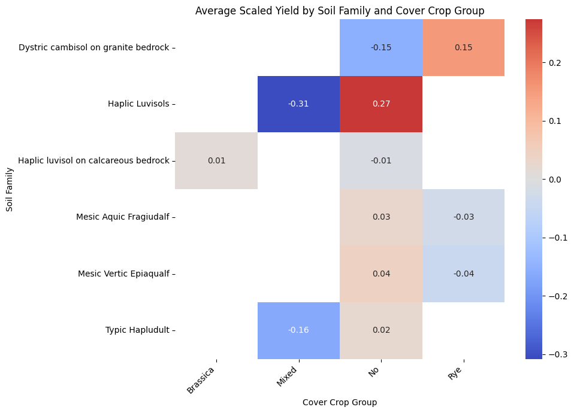
additionally, analyse to check if cover crops effect crop yield (not considering soil family)
# Ensure 'CoverCropGroup' and 'Scaled_Yield' columns are present and have no missing values for this analysis
df_subset_anova = df_subset[['CoverCropGroup', 'Yield_scaled']].dropna().copy()
# Perform One-Way ANOVA
# The formula 'Scaled_Yield ~ C(CoverCropGroup)' specifies Scaled_Yield as the dependent variable
# and CoverCropGroup as the independent categorical variable. C() indicates that CoverCropGroup should be treated as categorical.
try:
model = ols('Yield_scaled ~ C(CoverCropGroup)', data=df_subset_anova).fit()
anova_table = sm.stats.anova_lm(model, typ=2) # Type 2 ANOVA
print("\nOne-Way ANOVA: Effect of CoverCropGroup on Yield_scaled (ignoring SoilFamily)")
print(anova_table)
# Interpret the ANOVA result
alpha = 0.05
p_value = anova_table['PR(>F)'].iloc[0] # Get the p-value for CoverCropGroup
if p_value < alpha:
print(f" Result: The mean scaled yield is significantly different across different CoverCropGroups (p < {alpha}).")
else:
print(f" Result: There is no statistically significant difference in mean scaled yield across different CoverCropGroups (p >= {alpha}).")
except Exception as e:
print(f"\nCould not perform One-Way ANOVA: {e}")
print("Please ensure 'CoverCropGroup' is a valid column and 'Scaled_Yield' has been calculated correctly on df_subset.")
# To visualize this, we can use a boxplot or violin plot of Scaled_Yield by CoverCropGroup
plt.figure(figsize=(10, 6))
sns.boxplot(data=df_subset_anova, x='CoverCropGroup', y='Yield_scaled',hue='CoverCropGroup', palette='viridis')
plt.title('Scaled Yield Distribution by Cover Crop Group (Overall)')
plt.xlabel('Cover Crop Group')
plt.ylabel('Scaled Yield')
plt.xticks(rotation=45, ha='right')
plt.tight_layout()
plt.show()
plt.figure(figsize=(10, 6))
sns.violinplot(data=df_subset_anova, x='CoverCropGroup', y='Yield_scaled', hue='CoverCropGroup', palette='viridis', inner='quart')
plt.title('Scaled Yield Distribution by Cover Crop Group (Overall)')
plt.xlabel('Cover Crop Group')
plt.ylabel('Scaled Yield')
plt.xticks(rotation=45, ha='right')
plt.tight_layout()
plt.show()
One-Way ANOVA: Effect of CoverCropGroup on Yield_scaled (ignoring SoilFamily)
sum_sq df F PR(>F)
C(CoverCropGroup) 0.940988 14.0 6.297956 1.290184e-12
Residual 35.517279 3328.0 NaN NaN
Result: The mean scaled yield is significantly different across different CoverCropGroups (p < 0.05)./tmp/ipython-input-42-3933671685.py:29: FutureWarning: Series.__getitem__ treating keys as positions is deprecated. In a future version, integer keys will always be treated as labels (consistent with DataFrame behavior). To access a value by position, use `ser.iloc[pos]`
p_value = anova_table['PR(>F)'][0] # Get the p-value for CoverCropGroup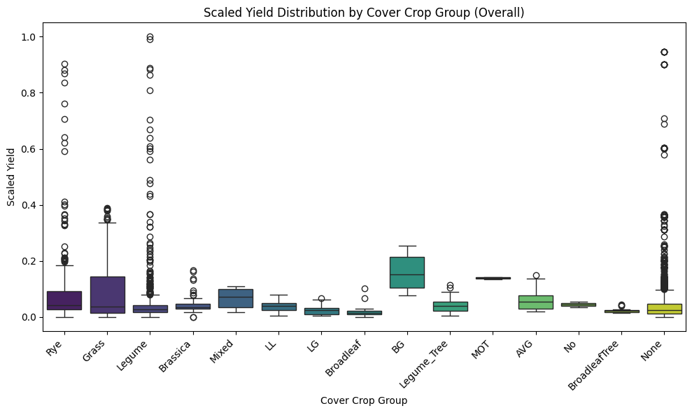
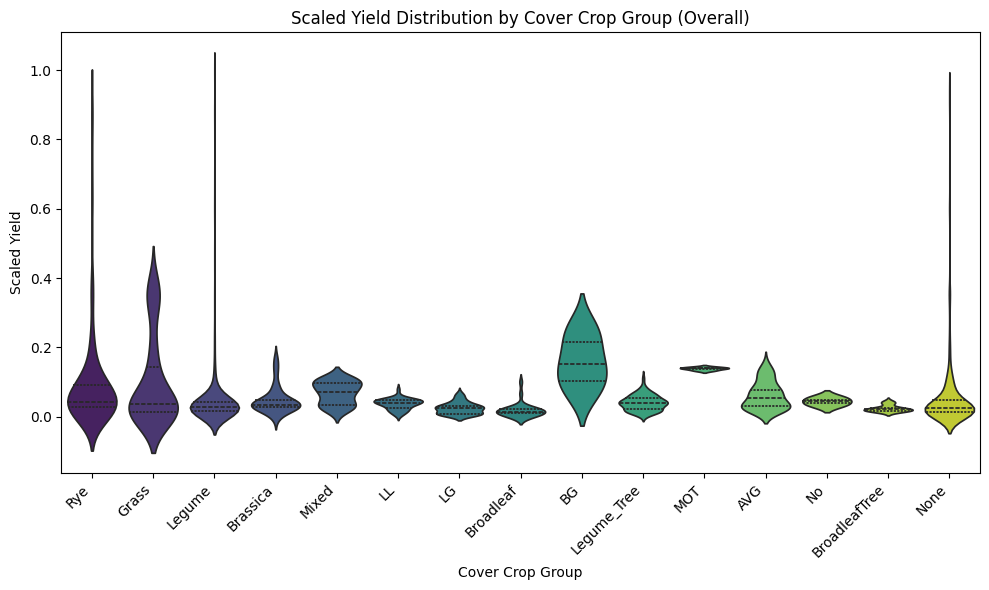